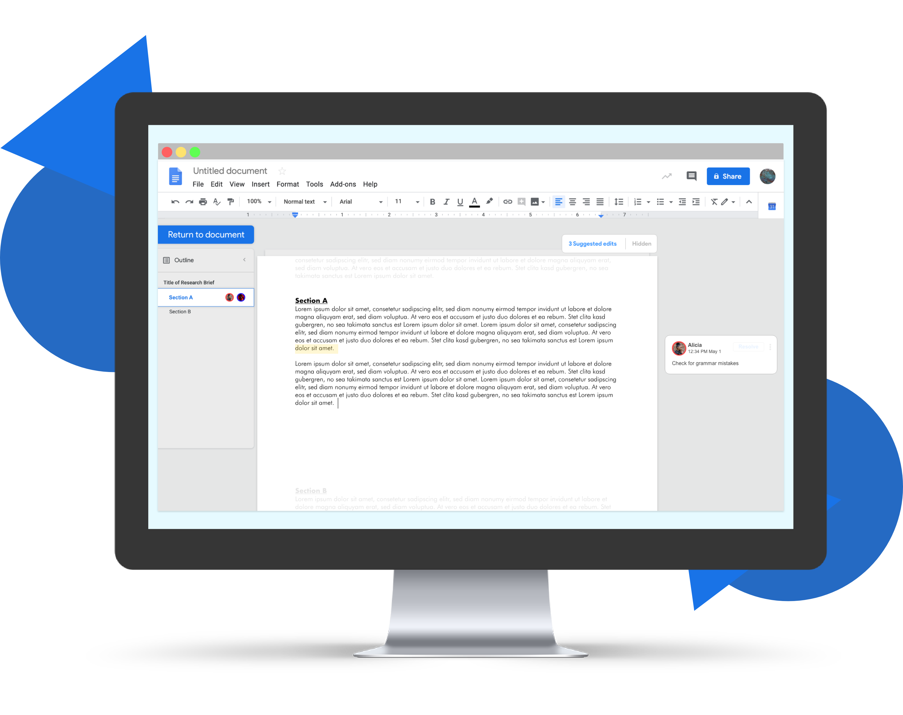
This is a personal passion project inspired by my friends at the dog run. We always complain about how hard it is to meet up, so I decided to explore that problem through design.
Researcher, Designer
2 Months
UX Design, UX Research, Product Design
Adobe XD, Sketch, InVision
Google Documents is a staple in collaborative document writing.
Despite its many functions for version control, people are still struggling
to work effectively with others on a single document.
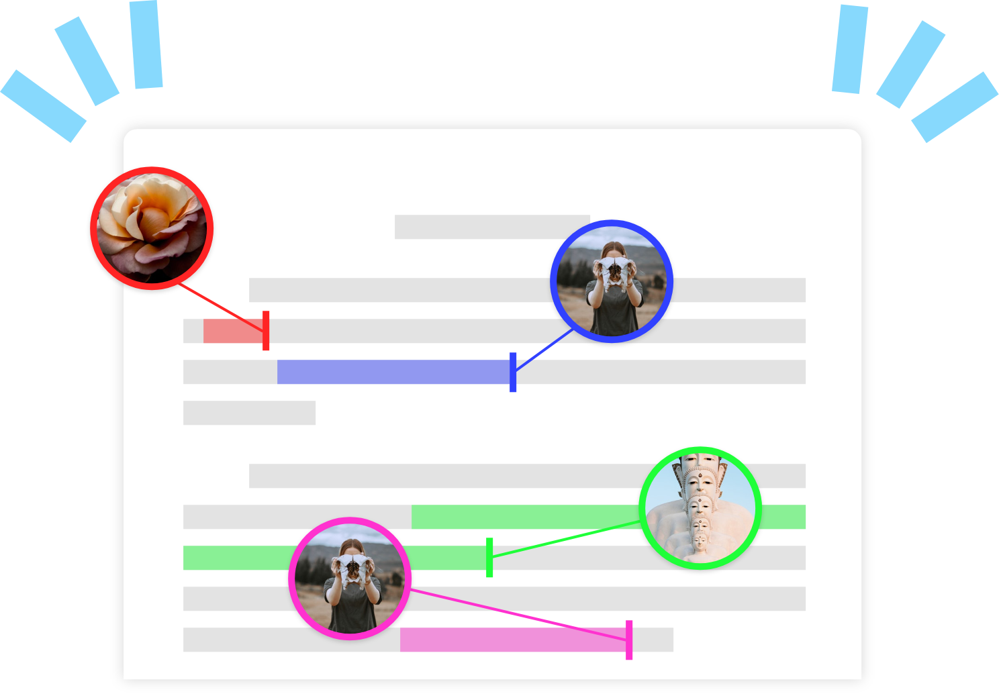
I wanted to add a function to Google Docs that would maintain its dynamic and collaborative nature, but still give individuals the space and isolation they need to concentrate on their own portion.
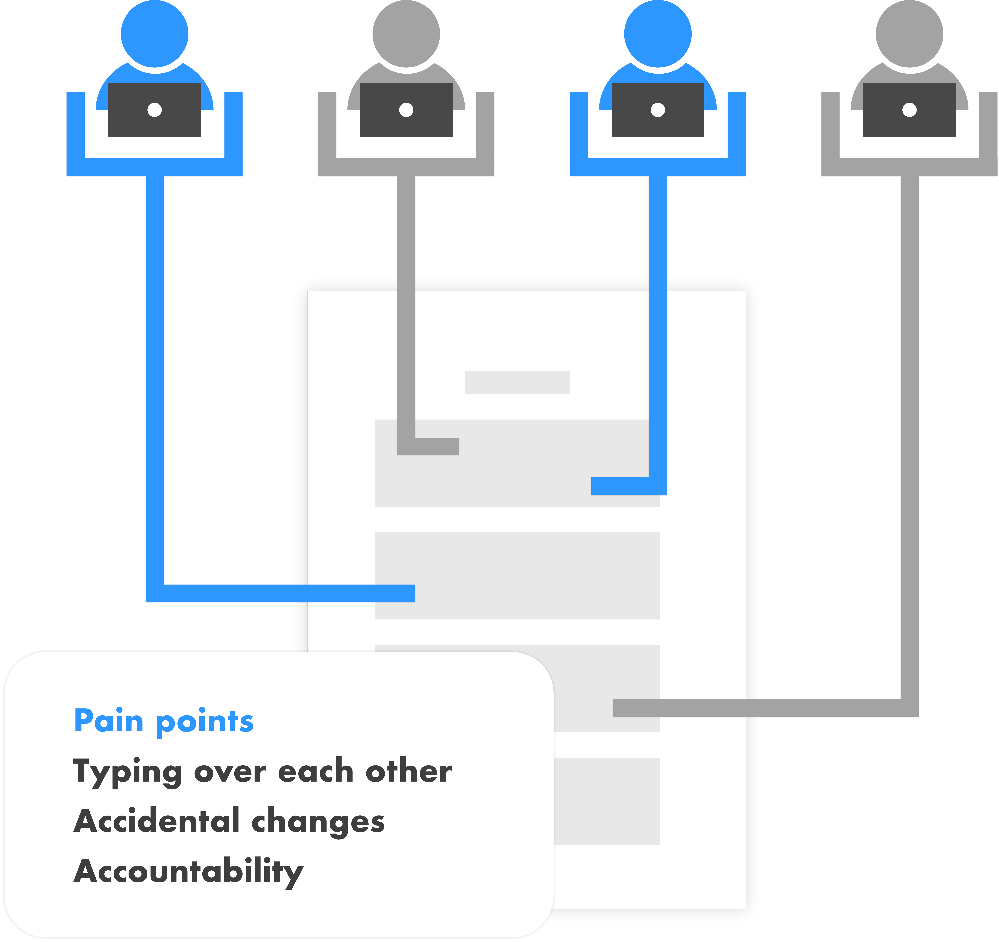
This project aims to create a lightweight app that helps owners communicate information about their dog's personality and preferences to the building's dog-owning community as quickly as possible.
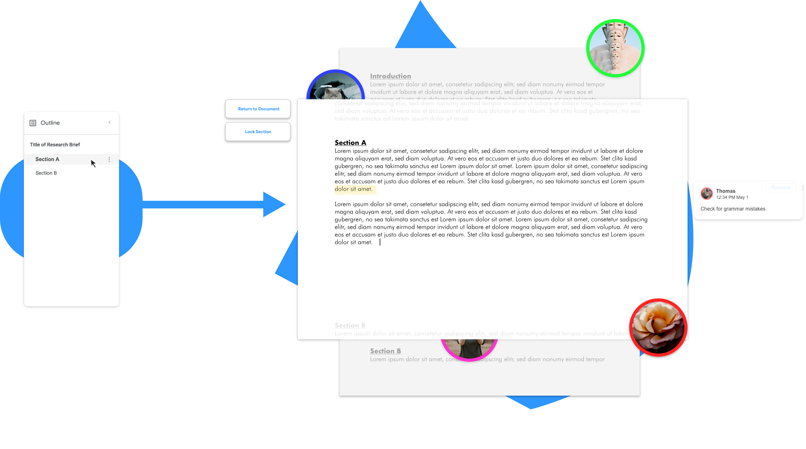
I conducted interviews with my friends and colleagues, all of whom I know work with Google Docs for work or school. I also sent out a SurveyMonkey survey to several professional Slack groups and a subreddit.
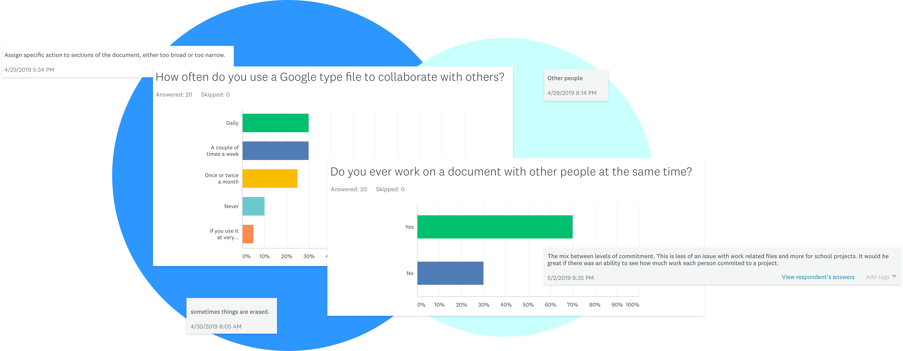
This project aims to create a lightweight app that helps owners communicate information about their dog's personality and preferences to the building's dog-owning community as quickly as possible.
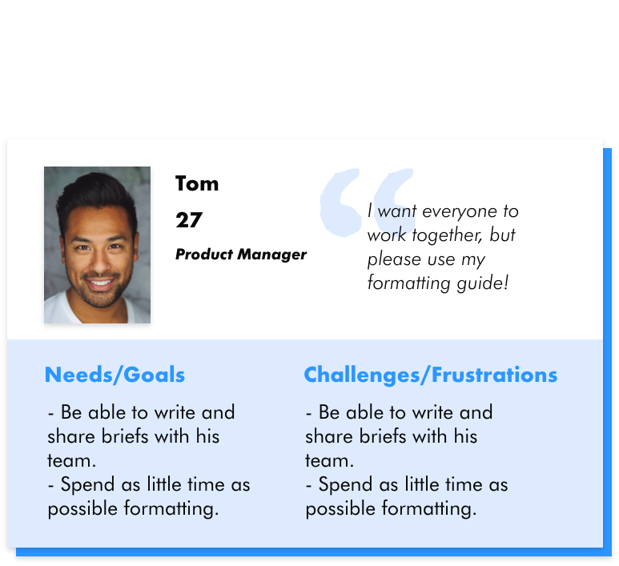
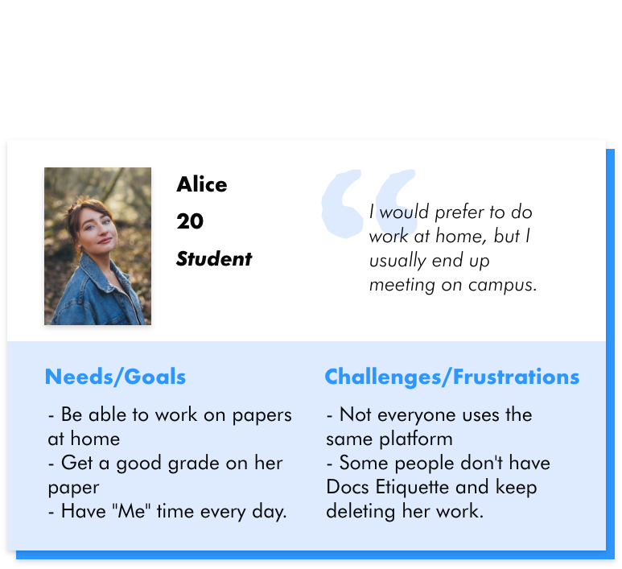
These are the main points I found.
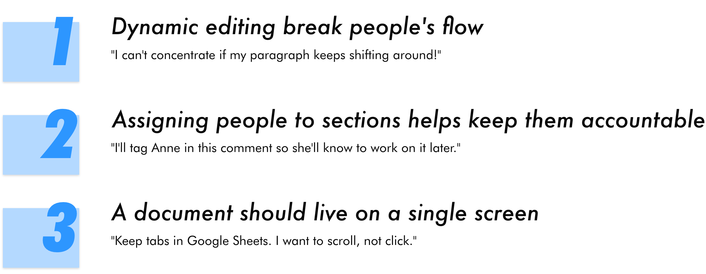
This project aims to get the user up and running as quickly as possible. I decided to build the sectioning function into the existing outline. A single click will center the section on the screen, while a double click will let users enter focus mode. Hovering will also reveal the menu icon, which signals additional functionalities.
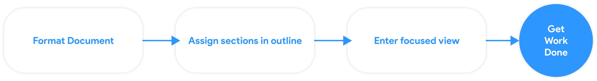
I had four major iterations, which I used to reduce unnecessary interactions and cherry pick what people liked. The first three helped inform the final version and create an easy to learn functionality.
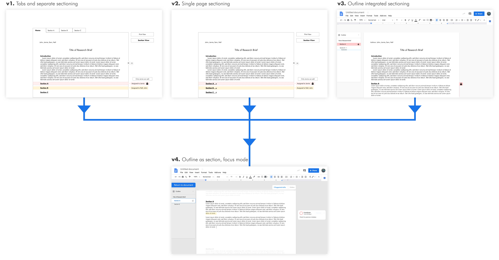
Here are some key functions that make this thing sick.
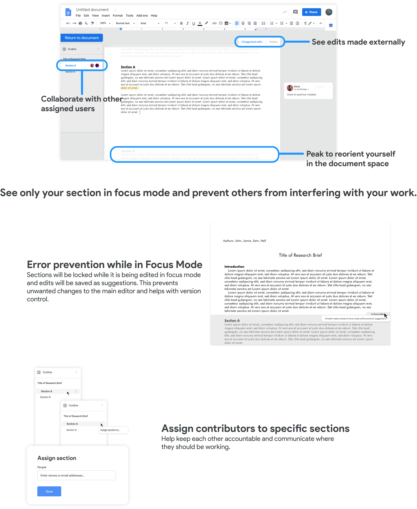